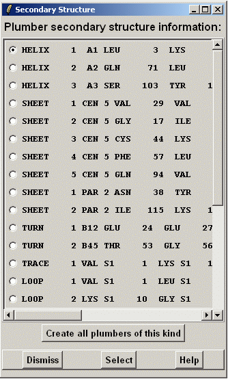

**************************************************************************
Protein secondary structure widget
Eero Häkkinen CSC 2002
**************************************************************************
This widget display a list of detected secondary structures.

Select button will extract atom information from secondary structure description and insert it into Plumber widget. It will also set the plumber type but there is no restrictions of freedom of choice. So you can change the type if you like.
The "Create all plumbers of this kind" will create a new plumber for each
secondary structure description of the same kind. So in situation of the screen-shot
three helixes would be created.
Plumber options in Plumber widget are left untouched and plumbers are created immediately.
So you should set the plumber options before clicking this button.